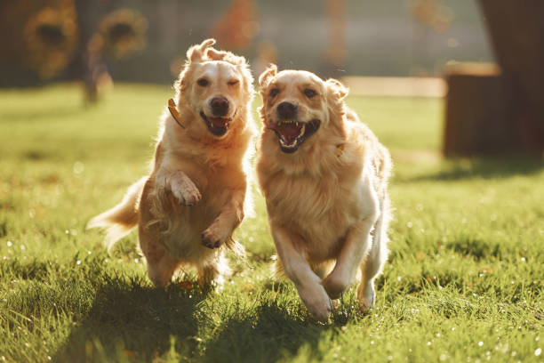

Golden Retriever Galéria

Üdvözöljük Golden Retrieverünk Világában!
A Golden Retrieverek kiváló társak, intelligensek és barátságosak. Fedezze fel e csodálatos fajta világát!
Az arany színű szőrzet, a jó természet, és az édes kinézet mind hozzájárulnak ahhoz, hogy A Golden Retrieverek az egyik legkedveltebb házikedvenc legyenek a világon.
A Golden Retriever egyike azoknak a fajtáknak, amelyek nem csupán háziállatként, hanem igazi családtagként válnak elengedhetetlenné az életünkben. E kivételes fajta jellegzetes arany színű szőrzetéről, barátságos természetéről és kiváló intelligenciájáról ismert világszerte.
A Golden Retrieverek szívük mélyén gyermekként őrzik meg játékosságukat és édes természetüket. Ez a fajta híres kivételes alkalmazkodó képességéről és könnyen kezelhető természetéről is. Ideális választás családoknak, pároknak vagy akár egyedülállóknak is, mivel hűségük és szeretetük határtalan.
A Golden Retrieverek rendkívül intelligensek, amit kiválóan kihasználhatunk a különböző trükkök és parancsok megtanításakor. Számos területen kiválóan teljesítenek, legyen szó munkáról, kiképzésről vagy éppen versenyzésről. A Golden Retrieverek nemcsak fizikailag, de mentálisan is aktívak, így fontos a rendszeres testmozgás és szellemi stimuláció számukra.
A gyerekekkel való kiváló együttműködésük miatt a Golden Retrieverek ideális kutyatársak a családoknak. Ők valóban megfelelnek a "nagy testű, puha szív" jelzőnek. Barátságos megközelítésükkel és toleráns természetükkel hamar az egész család kedvencévé válnak.
A Golden Retrieverek nem csupán kiváló háziállatok, hanem terápiás célokra is felhasználhatók. Kiválóan érzik az emberek érzelmi állapotát és képesek enyhíteni a stresszt vagy szorongást. Ez a különleges képességük teszi őket keresett terápiás kutyákká kórházakban, idősek otthonaiban és más egészségügyi intézményekben.
A Golden Retrieverek mindemellett kiválóan teljesítenek kereső- és mentőfeladatokban is. Rendkívüli szaglásuk és intelligenciájuk révén segítettek már számos életet menteni különböző katasztrófahelyszíneken.
Végül, de nem utolsósorban, A Golden Retrieverek szépsége elbűvöl mindenkit. Szép arany színű szőrzetük és szelíd tekintetük miatt sokan beleszeretnek ebbe a fajtába már az első pillantásra.
A Golden Retriever nem csupán kutyafajta; az életünk értékes része és hűséges társunk. Azok, akik egyszer is megtapasztalták e fajta ölelését és szeretetét, örökre el vannak ragadtatva A Golden Retrieverek varázsától.